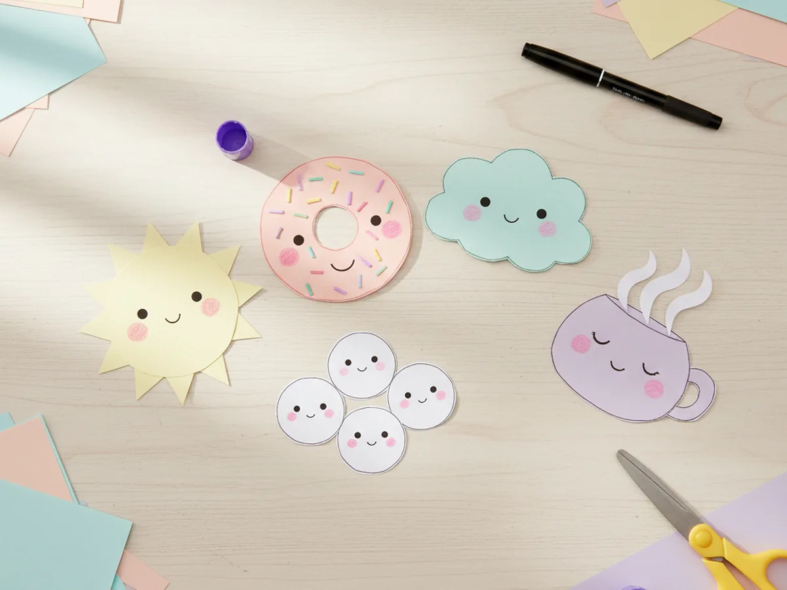
If your little one loves anything cute, smiling, and a little bit Japanese, this list of kawaii paper crafts is going to make their whole day. We rounded up 20 sweet ideas with friendly faces, pastel colors, and rosy cheeks, all simple enough for small hands and made with basic paper supplies. Every single one looks adorable on a shelf, a fridge, or a sunny windowsill. 🥰
What You'll Need
Most of these kawaii paper crafts share the same little supply kit, so one quick prep session covers the whole list.
- Pastel construction paper, the soft mint, pink, peach, and lilac shades that give kawaii crafts their cozy look.
- Crayola pastel cardstock, sturdier than regular paper for cards, standees, and pop-up shapes.
- Fiskars blunt-tip kids scissors, comfortable for little hands and great for round kawaii shapes.
- Washable disappearing purple glue sticks, so kids can see exactly where they applied glue.
- Crayola classic markers, perfect for cheeks, blushes, and bright kawaii details.
- Sakura Pigma Micron fine line pen, the secret to drawing those tiny kawaii dot eyes and curved smiles.
- Self-adhesive googly eyes in mixed sizes, an instant cuteness boost for any shape.
- Optional extras: a pink crayon for blush cheeks, white gel pen for eye highlights, washi tape, and ribbon.
20 Cute Kawaii Paper Craft Ideas
1. Smiling Cloud Pal
Cut a fluffy cloud shape from white cardstock, then add two tiny dot eyes, a curved smile, and two pink crayon cheeks. Glue a small loop of ribbon at the top and hang it from a curtain rod or shelf. It is the simplest of all kawaii paper crafts and somehow still the one kids want to make again the next day. ☁️
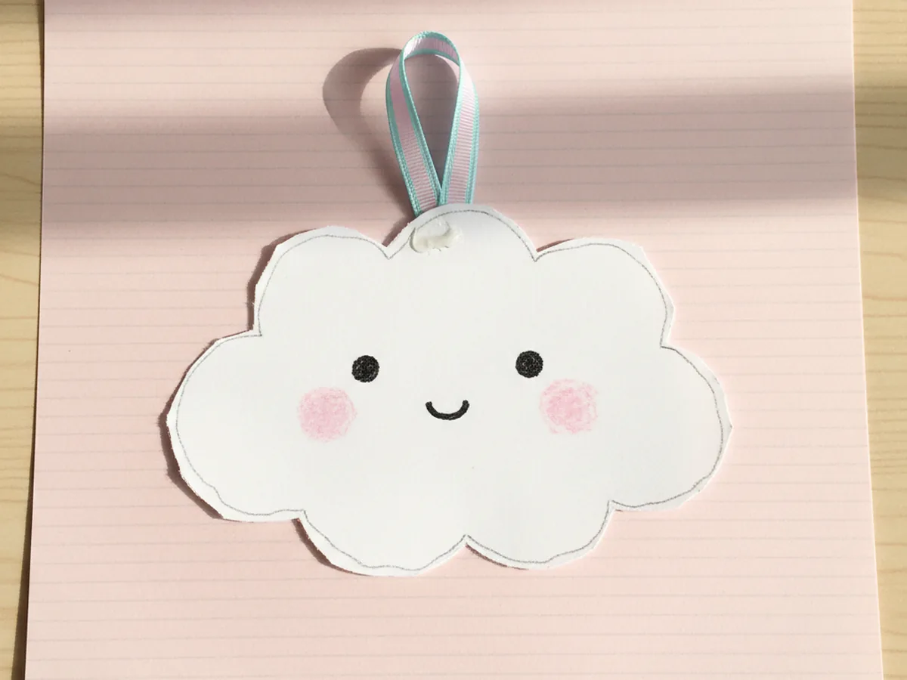
2. Smiling Paper Sushi Roll
Wrap a small white paper rectangle around a pink and green strip to make a tiny sushi roll, then add a sweet kawaii face with dot eyes and a happy smile. Make several rolls and line them up on a paper plate to mimic a real sushi platter. Older siblings love helping the little ones with the rolling part.
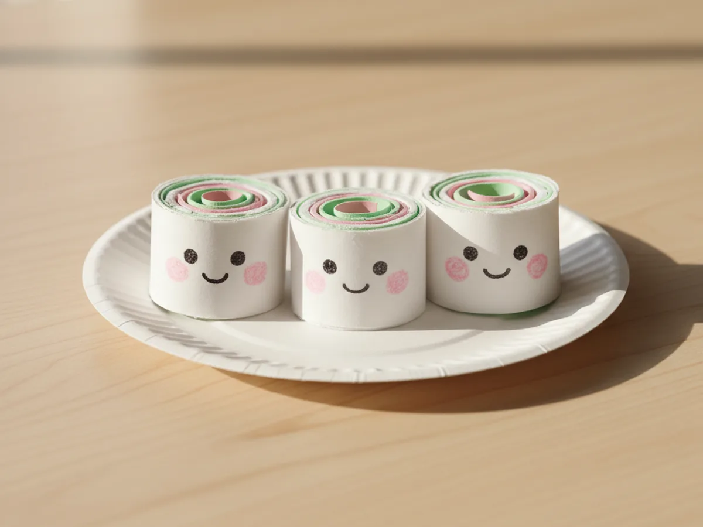
3. Bento Box Friends
Take a shallow paper box, line it with green tissue paper, then add little paper food shapes with kawaii faces, a paper rice ball, a smiling carrot, and a happy egg. The whole thing looks like a tiny lunchbox full of friends. This is a wonderful imaginative play craft, perfect for pretend picnics under the kitchen table.
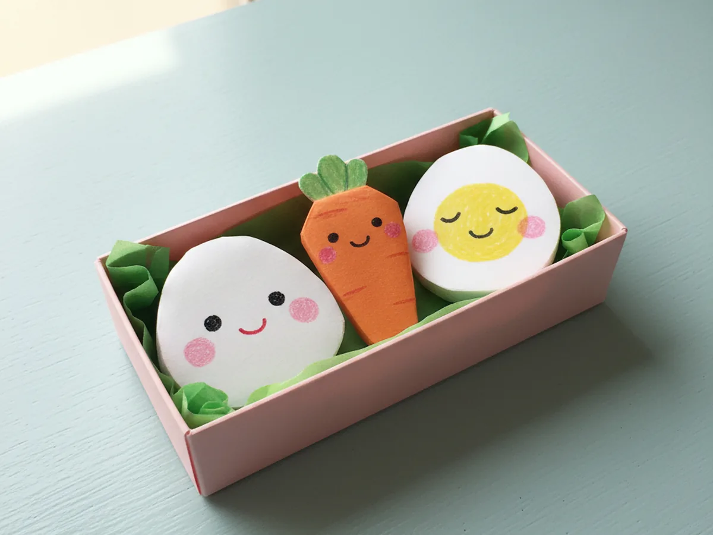
4. Happy Paper Sun Face
Cut a big yellow circle for the sun and a ring of triangle rays, then glue them together and add a sweet kawaii face with rosy cheeks. Tape it to the kitchen window so it greets you every morning. Kawaii paper crafts for kids like this one feel like instant little mood-boosters around the house.
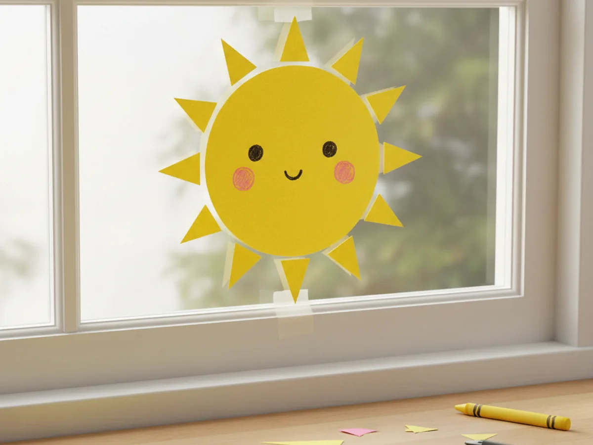
5. Cherry Blossom Card
Fold a piece of pink cardstock in half, then glue on a small brown paper branch and a cluster of tiny five-petal cherry blossoms. Add one little kawaii blossom with a happy face peeking from the corner. It is a sweet card to send to grandma or to leave on the breakfast table just because. 🌸
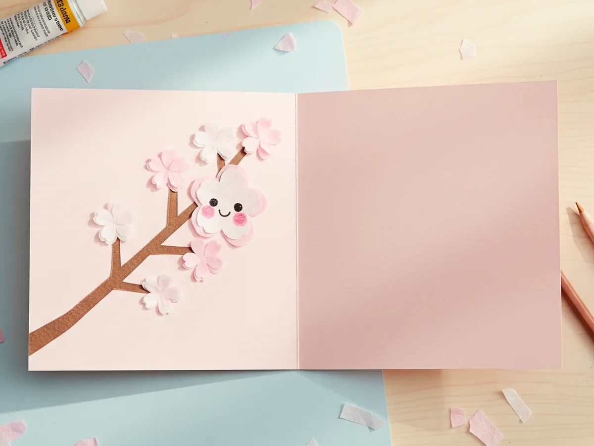
6. Smiling Paper Sandwich Stack
Layer paper rectangles cut to look like bread, lettuce, cheese, and tomato, then add a tiny smiling face on the top slice of bread. Glue the layers slightly off-center so the sandwich looks playful and stacked. Toddlers love picking the colors for each ingredient and squealing as the smile goes on last.
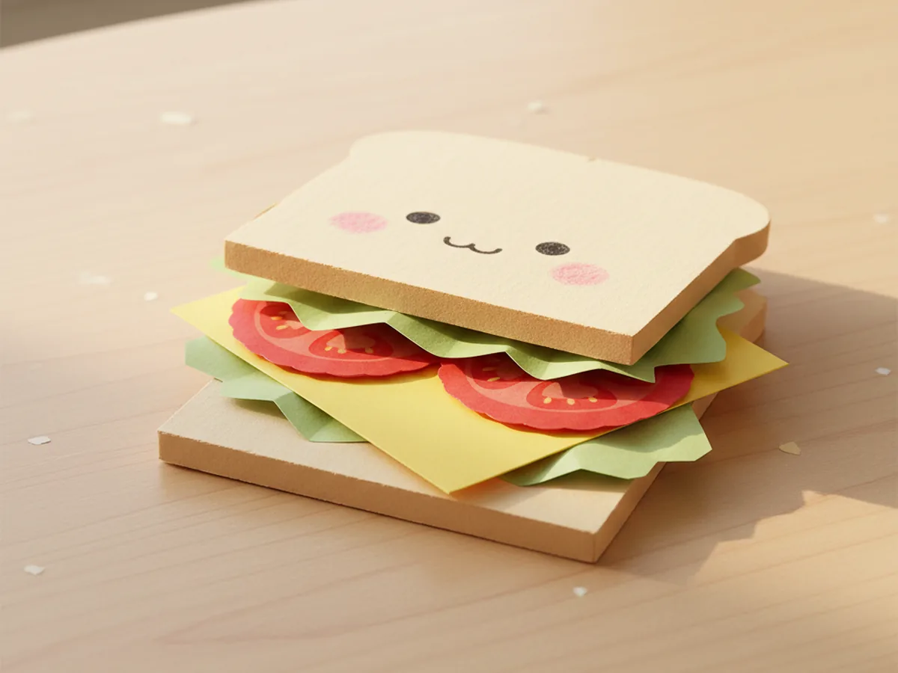
7. Cat Onigiri Rice Ball
Cut a triangle of white paper for the rice ball, add a thin black paper strip across the bottom for the seaweed, then glue on two tiny pointed cat ears at the top. Finish with sleepy dot eyes, whiskers, and a small smile. These tiny kawaii paper crafts are pure giggles, especially when you make a whole row of them.
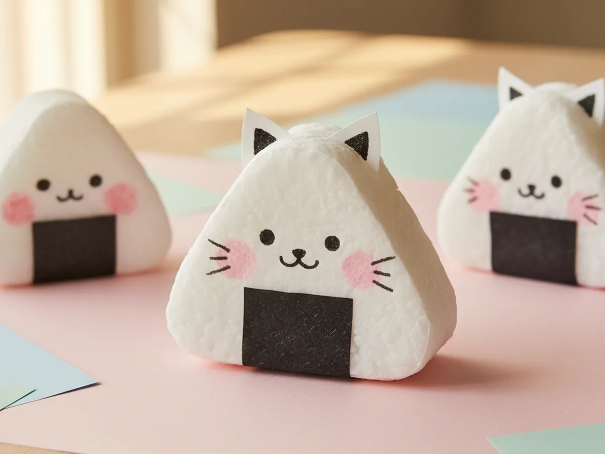
8. Strawberry Smile Card
Cut a big red strawberry shape, glue on small white paper seed dots and a green leafy top, and finish with a happy kawaii face right in the middle. Use it as a mini card or a fridge magnet by adding a small magnet on the back. Such a sweet little gift for a friend, a sibling, or a tooth fairy note.
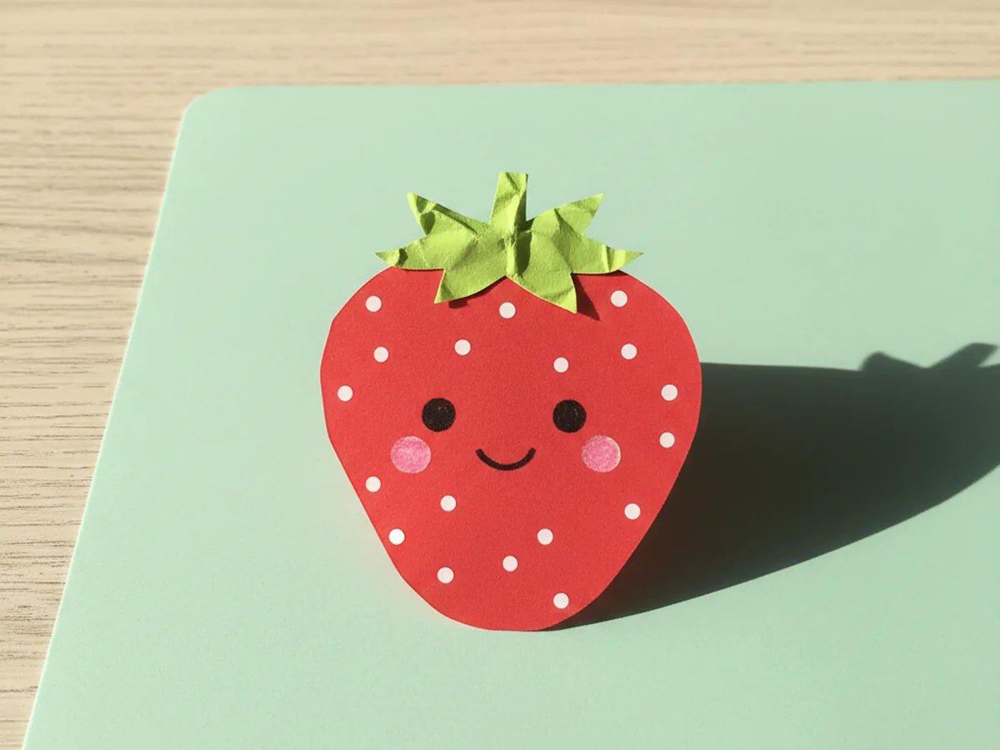
9. Cloud Mobile
Make four small smiling clouds, a tiny smiling sun, and one round raindrop with a friendly face. Tape each one to a strand of string at different lengths and tie all the strings to a small wooden dowel or a chopstick. Hang it above a crib, a play area, or a reading nook for a soft little daily smile.
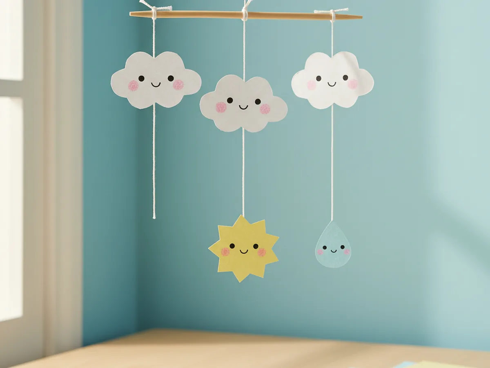
10. Smiling Paper Donut
Cut a wide pastel pink ring for the donut base, layer a slightly smaller pastel-colored ring on top to look like icing, and add tiny rectangle paper sprinkles. A small kawaii face right in the middle of the icing makes it instantly adorable. Older kids can make a whole donut box scene with several flavors.
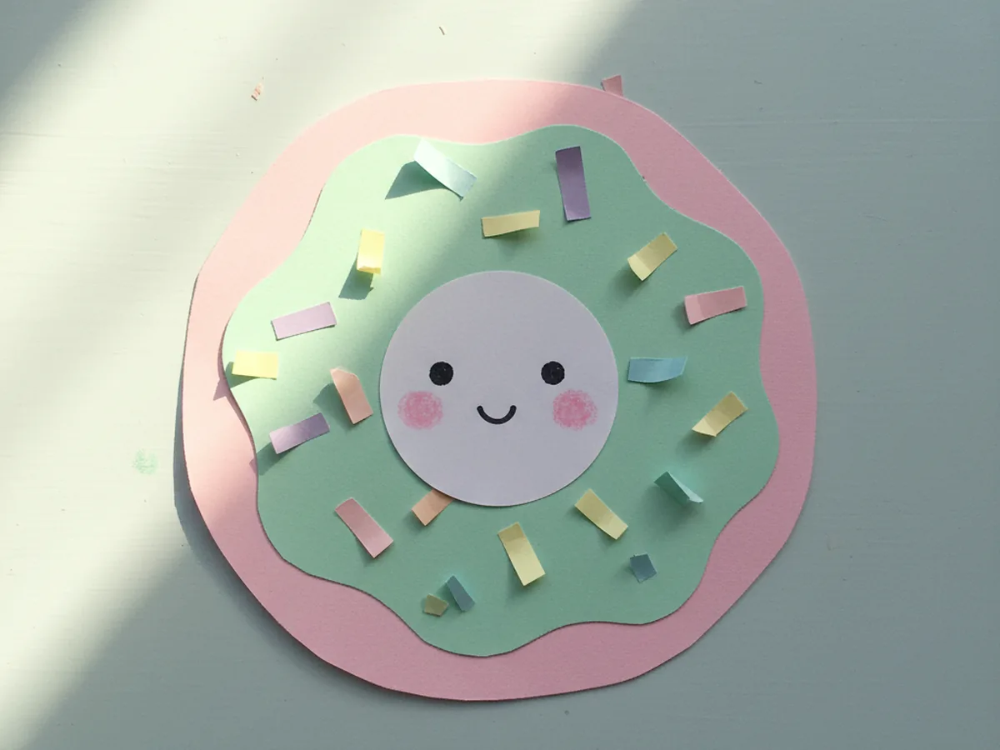
11. Mochi Family
Cut several small soft-edged round shapes from pastel paper, pink, mint, lilac, and cream, and add a different sweet little face to each one. Arrange the whole family on a small paper plate or a tray. These chubby little cute kawaii paper crafts are always the ones that end up on the bedroom shelf for months.
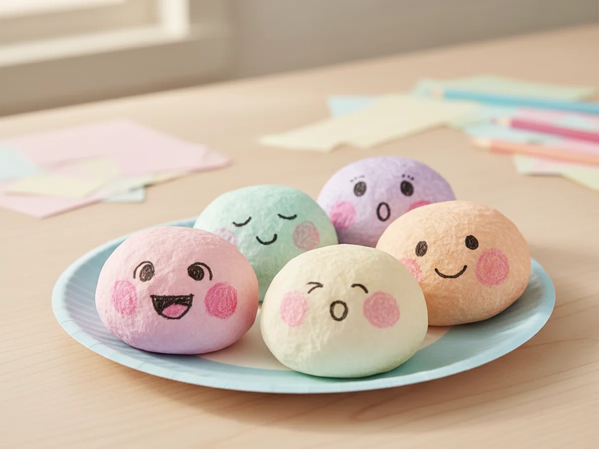
12. Kawaii Cactus Buddy
Cut a tall green paper cactus shape, glue it onto a small terracotta-colored paper pot, and add a happy kawaii face on the cactus body. A tiny pink paper flower on top finishes the look. Stand it up with a folded tab or tape it flat to the wall above a desk for a cheerful study-time companion.
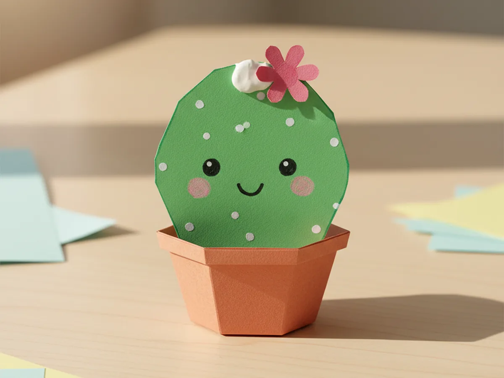
13. Bunny Pop-Up Card
Fold a piece of white cardstock in half, cut two small slits in the fold to make a pop-up tab, and glue a paper bunny with a kawaii face onto the tab so it stands up when the card opens. Decorate the inside with little carrots, hearts, and stars. A wonderful birthday card or just-because surprise.
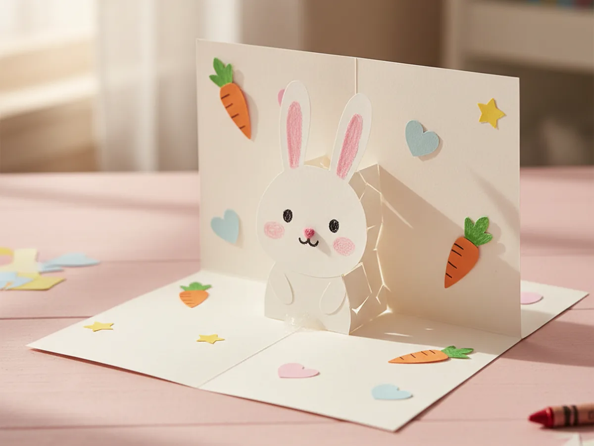
14. Toast and Egg Friends
Cut a square of light brown paper for the toast and a wavy white paper shape with a yellow yolk for the egg. Add a sleepy kawaii face on each one and lean them against each other on a small paper plate. Breakfast-themed kawaii paper crafts are always a hit because they look exactly like a tiny cartoon meal.
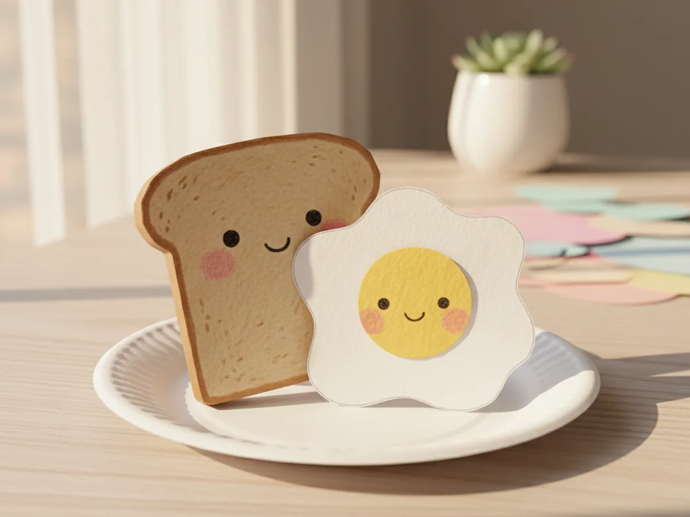
15. Tea Cup Pal
Cut a rounded teacup shape from light blue or pink cardstock, add a small handle on the side, and draw a kawaii face on the front of the cup. A tiny paper tea bag tag peeks out the top, and a few wisps of steam float above the rim. Sweet for a tea-party afternoon with stuffed animals. 🍵
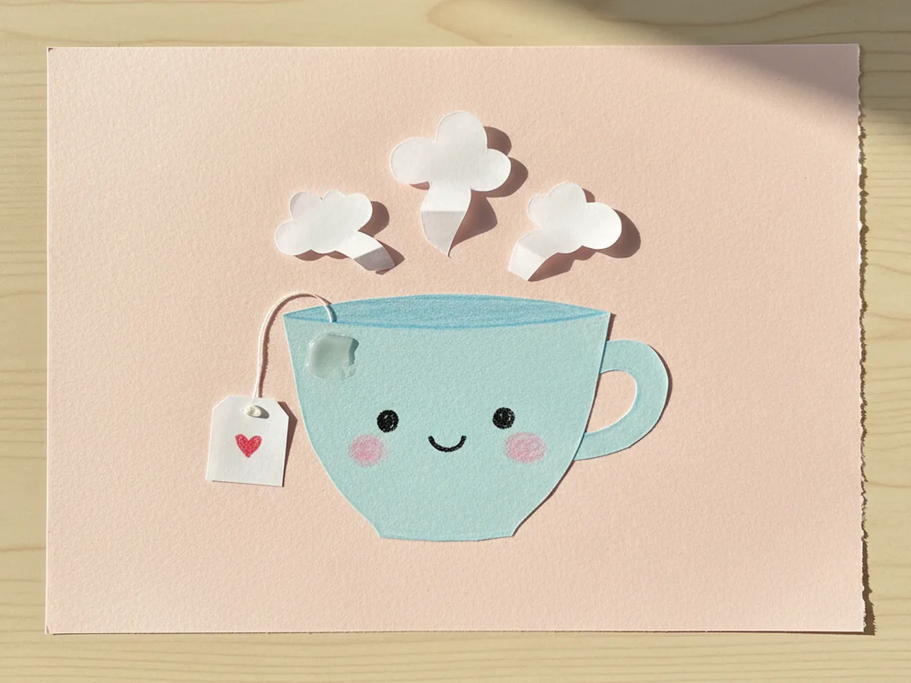
16. Smiling Flower Pots
Make several small terracotta paper pots with kawaii faces and glue colorful tissue paper flowers above each pot. Line them up along a windowsill or a shelf in the playroom for a tiny indoor garden. Toddlers love adding the cheeks and the tiny smiles, while older kids enjoy designing the flower shapes.
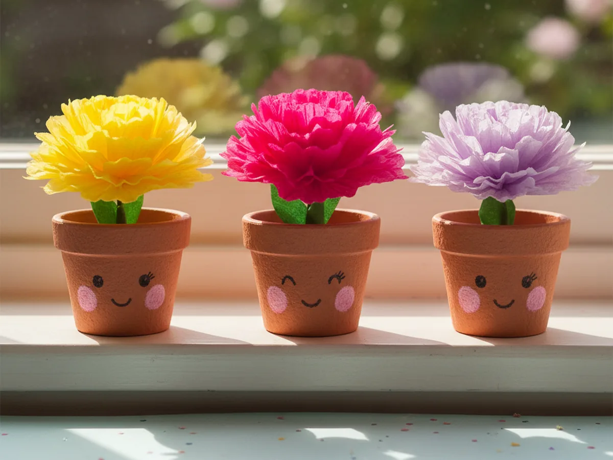
17. Rainbow Smile
Cut a wide arc shape from white cardstock and glue on layered paper strips in soft pastel rainbow colors. Add a tiny kawaii face right in the middle of the rainbow and a fluffy white cloud at each end. Easy kawaii paper crafts like this one are perfect for a rainy day pick-me-up.
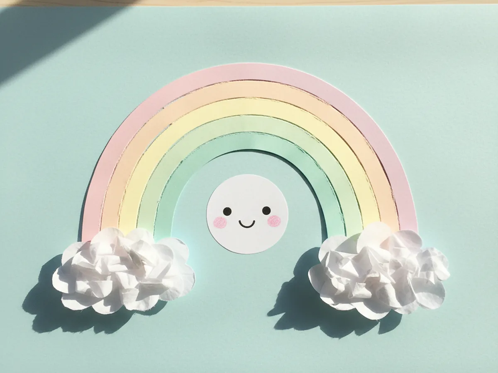
18. Boba Tea Buddy
Cut a clear-looking pale beige cup shape, glue several small dark brown paper circles at the bottom for tapioca pearls, and top the cup with a thin straw made from a paper strip. A tiny kawaii face on the cup makes the whole drink look like it is grinning back at you. Such a fun little pretend-shop decoration.
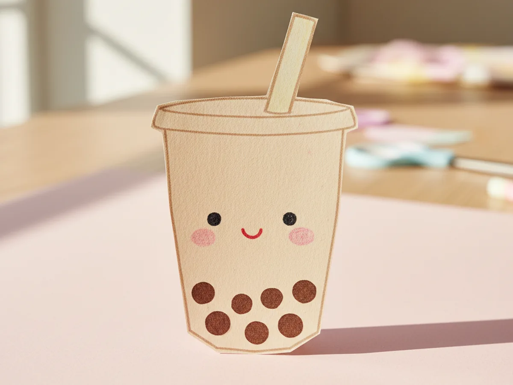
19. Star Smile Garland
Cut about a dozen small five-point stars from yellow, peach, and pale pink cardstock, and add a tiny kawaii face on each one. Punch a small hole at the top of each star and thread them onto a length of soft string. Hang the garland above a bed, a desk, or a play tent for a sweet starry vibe at bedtime.
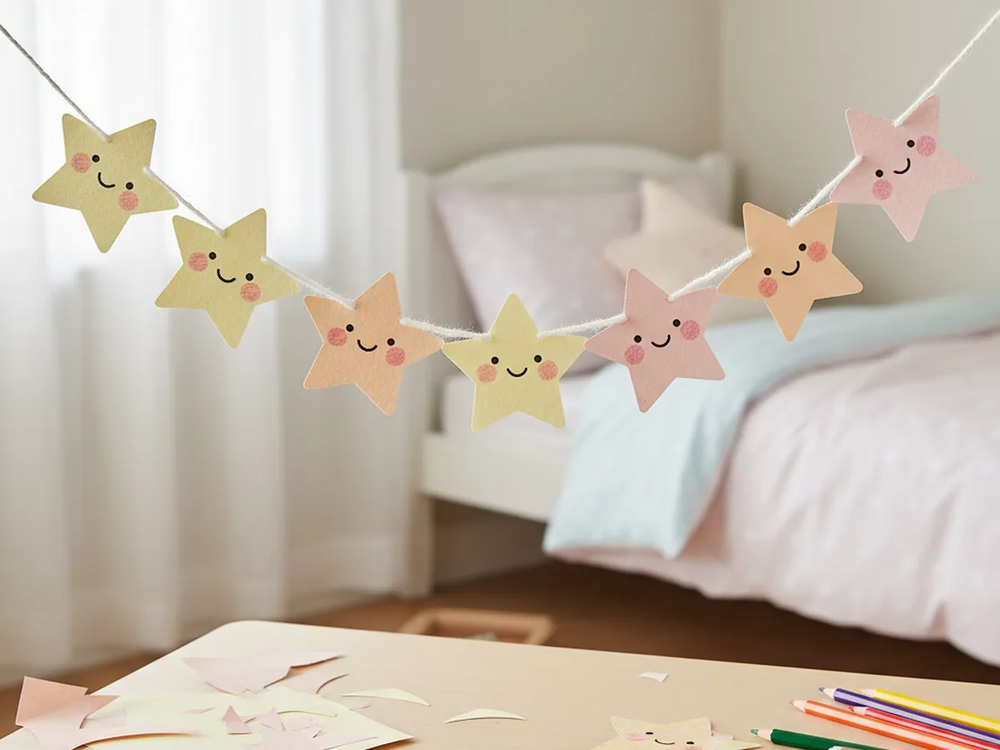
20. Mini Kawaii Notebook
Fold a few small sheets of paper in half and staple them along the spine to make a tiny pocket notebook. Decorate the cover with a smiling kawaii character, hearts, and stars in pastel pencils. Older kids can use the notebooks for doodles, secret notes, or little kindness lists for the people they love.
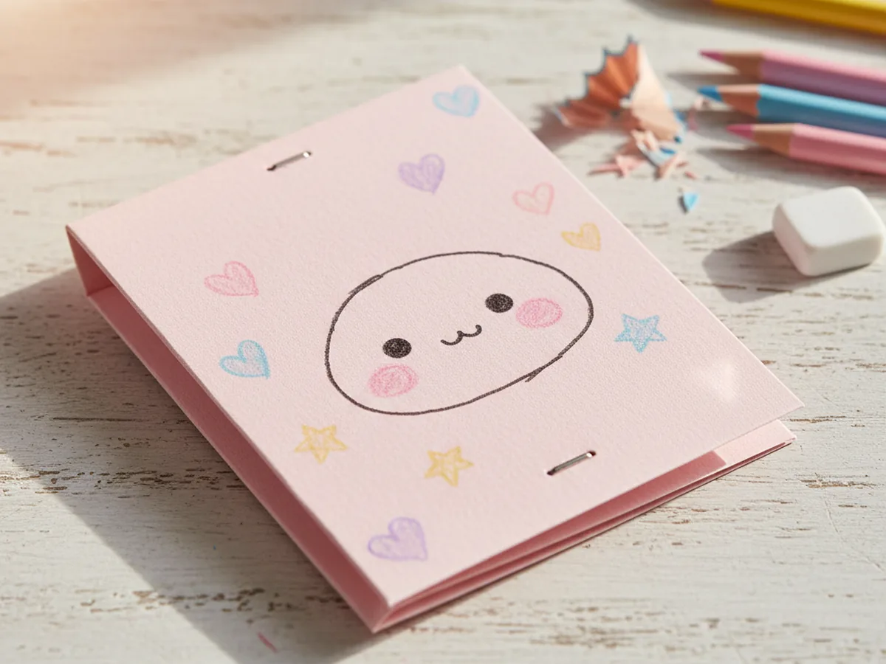
Final Thoughts
These kawaii paper crafts are proof that the smallest, sweetest projects often create the biggest smiles. A few sheets of pastel paper, a fine-tip pen for those little dot eyes, and a giggling kid by your side is genuinely all it takes. Pick one idea today, save the rest for next weekend, or work through the whole list one at a time. Whatever you choose, the moments together are the real magic. 🌟
More Crafts You'll Love
If your little one is loving these sweet, smile-filled ideas, these two are perfect for your next afternoon together.
Have fun, save the scraps for next time, and enjoy every sweet little moment with your child.